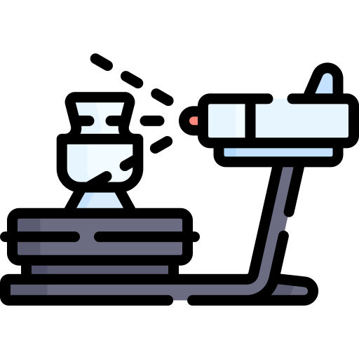
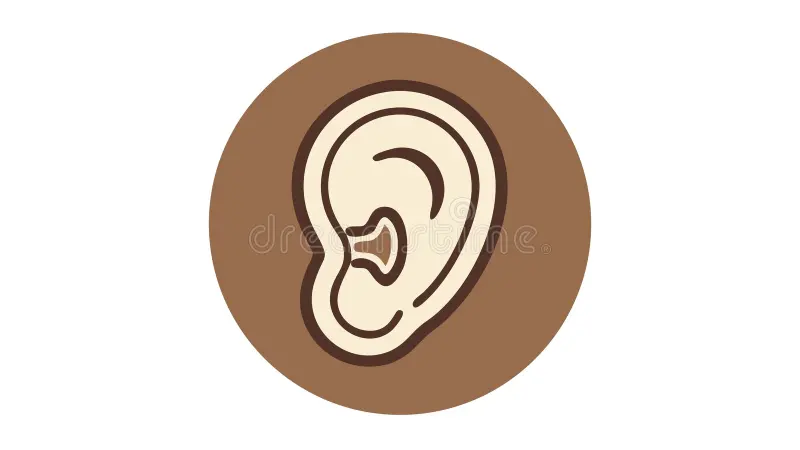

Nuestro tablero de trabajo
¡Hola a tod@s!
Para que tengáis toda la información del proyecto organizada y a mano, hemos habilitado un recurso Padlet. Este será nuestro centro de mandos donde encontraréis el contenido estructurado en 4 bloques fundamentales.
¿Qué encontrarás?
 Bloque I: Documentación del proyecto. Un resumen detallado de todos los puntos claves que estamos trabajando
Bloque I: Documentación del proyecto. Un resumen detallado de todos los puntos claves que estamos trabajando

Bloque II: Escaneado 3D: Videotutoriales prácticos y una guía rápida del software de escaneo.Bloque III: Software de diseño: Herramientas y recursos para la fase de modelado y creación

Bloque IV: Anatomía y teoría del oído: Repaso de términos esenciales para fundamentar vuestra trabajo Recomendación importante: Para garantizar un buen flujo de trabajo y evitar errores técnicos, os recomiendo encarecidamente que visitéis detenidamente los Bloques 1,2 y 4 antes de empezar con el Bloque 3. Tener clara la teoría y el proceso de escaneado es fundamental para que vuestro diseño final sea un éxito
Recomendación importante: Para garantizar un buen flujo de trabajo y evitar errores técnicos, os recomiendo encarecidamente que visitéis detenidamente los Bloques 1,2 y 4 antes de empezar con el Bloque 3. Tener clara la teoría y el proceso de escaneado es fundamental para que vuestro diseño final sea un éxito
Itinerario de aprendizaje-Padlet
Protocolo de Resolución: ¿Qué hago si algo falla?
En este proyecto, los retos técnicos son parte del aprendizaje. No te bloquees si algo no sale a la primera; he diseñado una estrategia escalonada para que te conviertas en un experto/a en solucionar incidencias.
Antes de levantar la mano, sigue estos 3 pasos de oro:
 Nivel 1: Autonomía Digital. Consulta los videotutoriales de apoyo que se han creado. La mayoría de las dudas técnicas ya tienen respuesta allí.
Nivel 1: Autonomía Digital. Consulta los videotutoriales de apoyo que se han creado. La mayoría de las dudas técnicas ya tienen respuesta allí.
 Nivel 2: Aprendizaje Cooperativo. Si después de ver el vídeo sigues con dudas, pregunta a tu pareja de trabajo. Dos cabezas piensan mejor que una y quizás vuestro compañero/a ya haya superado ese mismo bache. ¡Ayudarse es aprender dos veces!
Nivel 2: Aprendizaje Cooperativo. Si después de ver el vídeo sigues con dudas, pregunta a tu pareja de trabajo. Dos cabezas piensan mejor que una y quizás vuestro compañero/a ya haya superado ese mismo bache. ¡Ayudarse es aprender dos veces!
Nivel 3: El Docente como Facilitador. Si los pasos anteriores no han funcionado, ¡avísame! Intervendré para la desbloquear la situación. Aprovecharemos ese error para analizarlo juntos, ya que tu duda probablemente sea una gran oportunidad de aprendizaje para toda la clase.
 Recuerda: En este curso, equivocarse no es un fallo, es el primer paso para encontrar la solución técnica correcta.
Recuerda: En este curso, equivocarse no es un fallo, es el primer paso para encontrar la solución técnica correcta.